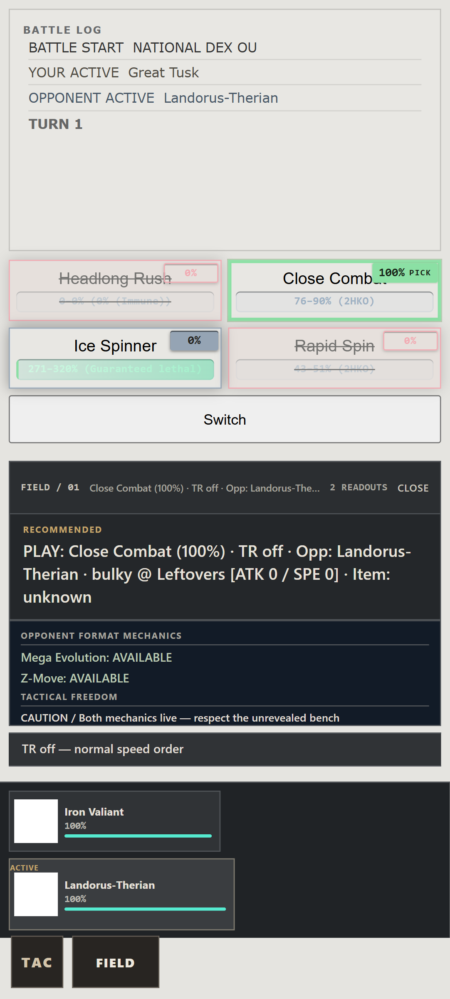
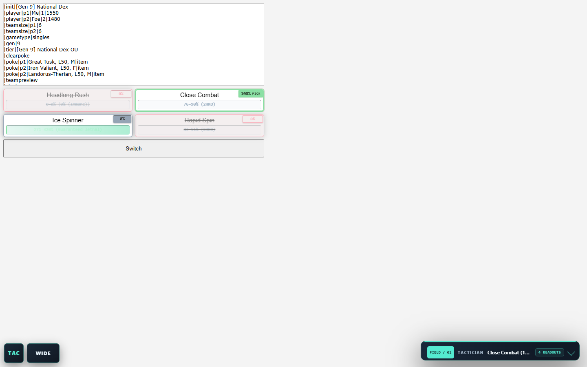

Showdown Tactician
Battle readout.
A quieter companion to the battle screen, with the next play and opponent notes close at hand.


Captured from the extension in Chromium using the battle fixture. The readout shown here is expanded; it stays collapsed by default in play.